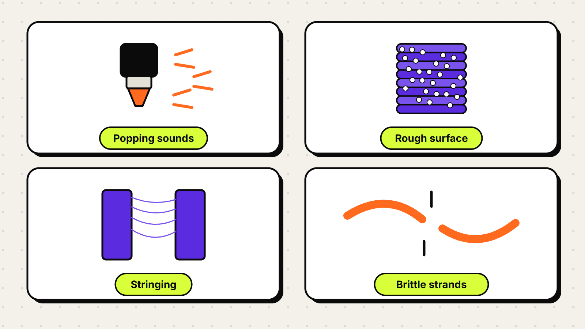
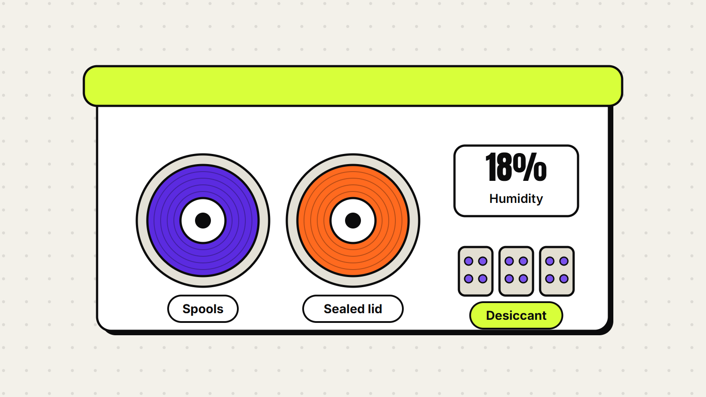

The monsoon is wonderful for many things and unkind to 3D printing filament. In a humid city like Mumbai, a spool left open on a shelf can pick up enough water to spoil prints. The damage is quiet: the spool looks the same, yet the surface turns rough, fine strings appear, and parts break more easily. A few habits prevent most of it.
Many printing plastics attract moisture from the air, a property called being hygroscopic. Nylon is famous for it. PETG takes up water faster than PLA, and PLA still absorbs enough to cause trouble over time. TPU and water-soluble support materials are also very sensitive. The more humid the air and the longer the exposure, the more water gets in.
At printing temperature, trapped water flashes into steam inside the nozzle. The steam pushes and bubbles through the soft plastic.

Stringing alone does not prove the filament is wet. Temperature, retraction, and cooling settings can cause it too. Repeated popping with small bubbles is a stronger clue. If a dry spool prints cleanly with the same settings, moisture was the problem. Our guide to common printing problems covers the other suspects.
The most useful habit is to keep unused spools sealed with a drying agent.

Silica gel fills up. Many beads can be dried and reused by following the maker's instructions. Do not heat packs that are not designed for it, and keep desiccant away from children and pets. A box with exhausted beads gives a false sense of security.
Wet filament can often be recovered with gentle, steady heat in a filament dryer or a well-controlled oven. Use the temperature the filament maker recommends. Too much heat can soften the plastic, fuse the loops together, or warp the spool. Kitchen ovens often swing well above their set value and should not be used for food and filament alternately. When unsure, use a dedicated dryer.
| Material | Moisture sensitivity | Storage advice |
|---|---|---|
| PLA | Low to moderate | Seal when not in use, especially in humid months |
| PETG | Moderate to high | Always seal with desiccant |
| ABS and ASA | Moderate | Seal and keep dry |
| TPU | High | Seal and dry before important prints |
| Nylon | Very high | Dry before use and print from a dry box |
Printed parts absorb far less than an open spool, because there is less surface relative to the material and they are no longer being melted. Most indoor pieces cope with humid weather. Still, avoid storing them wet, dry them after washing, and watch for mould on dusty surfaces. See caring for 3D prints for cleaning advice.
Tip: Weigh a new spool before the rains. A rise in weight over a few weeks of open storage is a sign it is taking on water.
Habits matter more than equipment. Before the rains, check every box seal and refresh the desiccant. During the season, open boxes only long enough to load a spool, and return it when printing ends. Once a week, look at the humidity indicator and replace tired beads. After the season, label spools that gave trouble and test them with a small print before using them on anything important.
If you order printed parts rather than printing yourself, this still helps you. A print made from dry filament has cleaner surfaces and better bonding, so it is reasonable to ask a studio how it stores its material.
In dry weather a short stay is rarely a problem. During humid weeks, return it to the sealed box, or print from a box that holds desiccant and has a small outlet for the filament.
Colour-changing beads show it directly. Otherwise, watch the humidity indicator: if the reading creeps up in a sealed box, refresh or replace the desiccant.
Factory-sealed bags protect well, as long as they are not punctured. Store them in a cool, dry place and open them only when needed.
Watch for small changes: a spool that popped once on a damp afternoon, fine hairs on a model that printed cleanly last month, or desiccant that changes colour sooner than usual. Acting at the first sign saves filament, because drying a slightly damp spool is quicker and safer than rescuing one that has sat open for weeks.
Keep spools sealed, keep desiccant fresh, dry at the maker's recommended temperature, and test before a long job. If you would rather leave the material handling to someone else, send us your file through the quote form. Not sure which plastic you need? Start with our filament comparison.